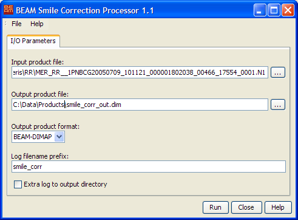

| Processor Description - Smile Correction Processor |
|
Please note: The chapter BEAM Scientific Data Processors provides a general description for all BEAM data processors. It describes the common graphical user interface (GUI), the command-line interface and the common processing request file format.

 to invoke a standard file dialog.
to invoke a standard file dialog.
to invoke a standard file dialog.
to invoke a standard file dialog.The following table describes the Smile Correction specific request file parameter. For a detailed description of the request file concept and file specification please look at the general description section.
| Parameter name | Description> | Type | Valueset |
|---|---|---|---|
| type | Request type. Mandatory attribute of the Request element |
String | "SMILE_CORRECTION" |
| include_all | Whether or not to include all spectral bands in the product | Boolean | "true" or "false" |
| bands | The spectral bands to be processed. | String | Comma separated list of band names |